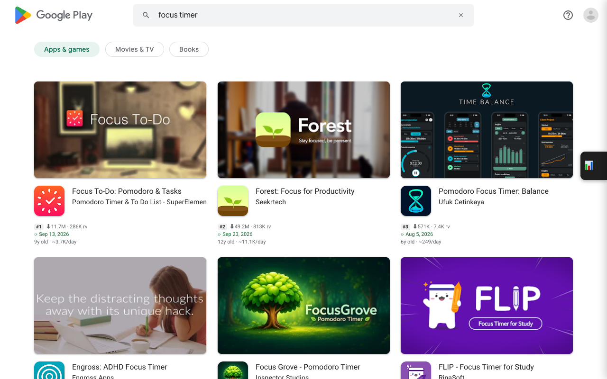
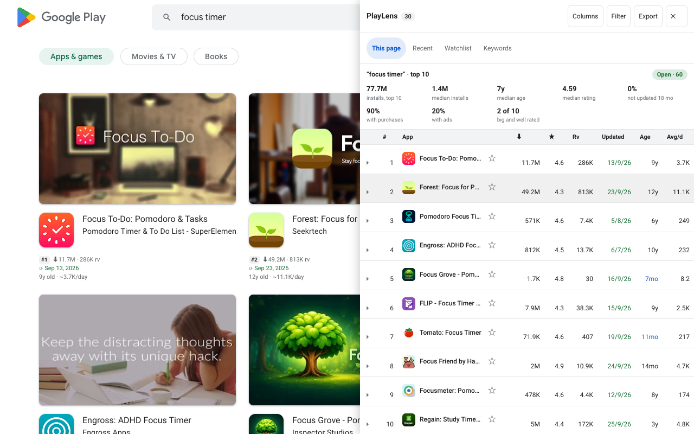

Why Play only shows “10M+”
Every app page on Google Play shows its installs as a bucket: 1M+, 10M+, 50M+. An app with 10.2 million installs and one with 49 million both read 10M+ if they sit in the same bucket, which makes the number almost useless for comparing two apps.
The exact figure is still in the page. Play's own data block for each app carries it, and the extension reads it for you.
Turn it on
- Install PlayLens from the Chrome Web Store (free).
- Open any Google Play list page: a search, a developer page, a category or a collection.
- Under each app's rating a short info line appears. No clicking through to each app.

Reading the info line
A line looks like #2 ⬇49.2M · 813K rv, followed by ⟳ Sep 23, 2026 and 12y old · ~11.1K/day.
| Part | Meaning |
|---|---|
#2 | Position on a search result page, following the cards as they stand on screen. |
⬇49.2M | Exact installs instead of Play's bucket. You can switch it off to see the bucket again. |
813K rv | Number of ratings, read from the app page, so it is not rounded the way the card rounds it. |
⟳ Sep 23, 2026 | Last update. Green within 6 months, amber within 18 months, red when older. |
12y old · ~11.1K/day | App age and average installs per day since launch. |
Apps released in the last 30 days are set in bold on a tint, and those under a year old in colour, so a new entrant stands out in a long list.
Two kinds of “installs per day”
The figure on the card is an average over the app's whole life: installs divided by days since release. It is a fair way to compare apps of different ages, but a ten-year-old app that peaked years ago will look healthier than it is today.
For the current trend, star an app to add it to your Watchlist. PlayLens keeps one snapshot a day and measures real growth from those snapshots. That figure needs at least two days of data, so it appears from the second day on. See the Watchlist guide.
Not revenue. Revenue can't be read from public pages, so PlayLens does not estimate it. Treat installs per day as a size and momentum signal only.
Get the list into a spreadsheet
Open the side panel with the button on the right edge of the page. The This page tab lists every app on the page. Click a header to sort, Columns to choose what to show, Filter to narrow by installs, rating, age or freshness, and Export to copy the table or download CSV or JSON with all fields.

Questions
Does it work on developer pages and collections?
Yes. Any page that shows a grid or row of app cards: search, developer pages, categories, collections, “Similar apps” and the Play home page.
Do I need an account?
No. There is no account and no analytics. Requests go straight to play.google.com and what is stored stays on your device.